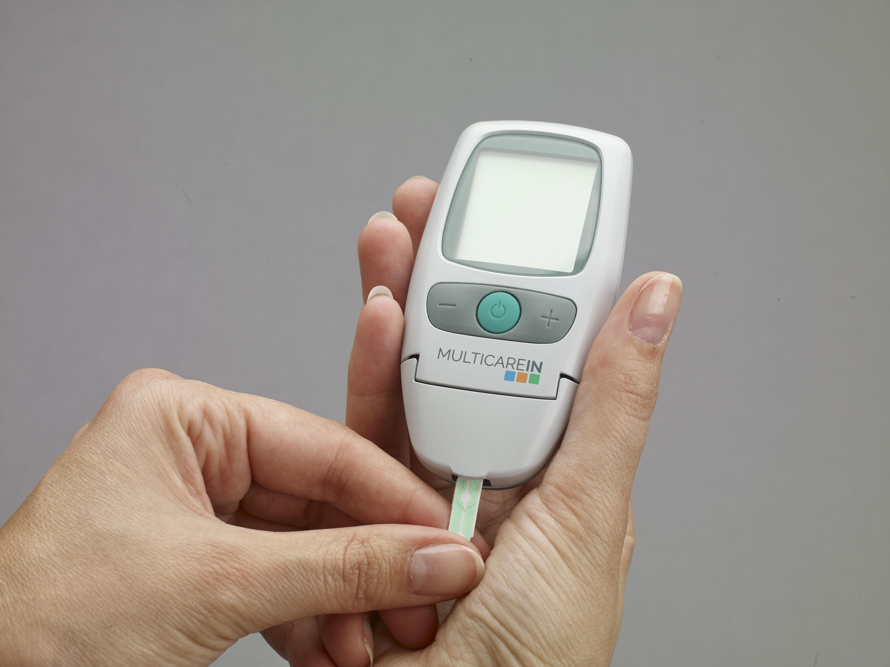
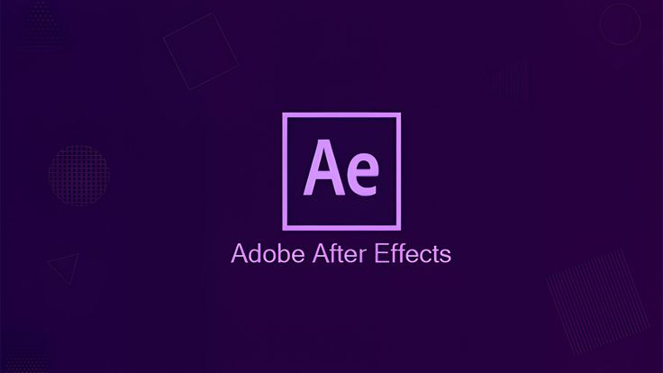
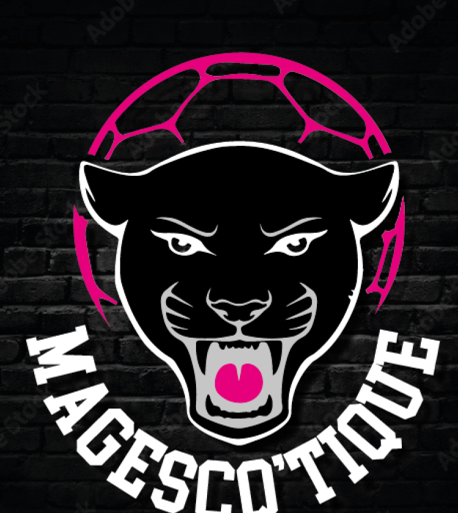
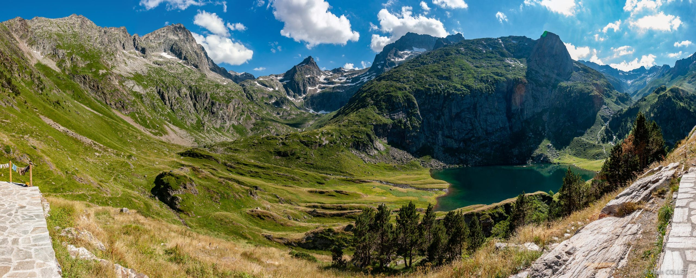
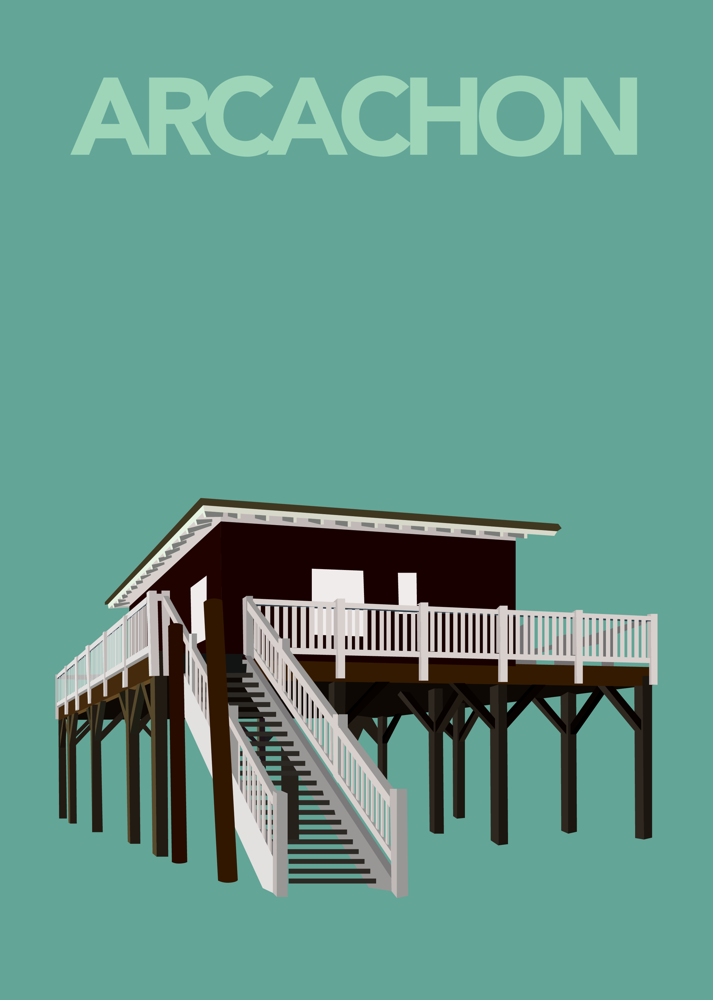
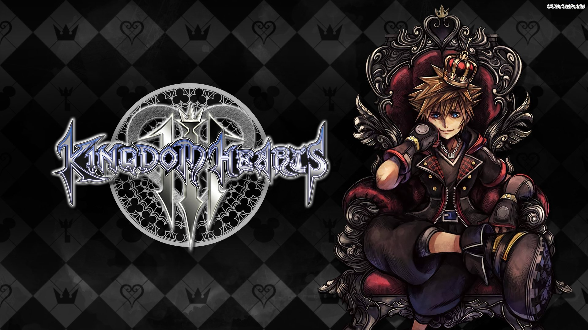
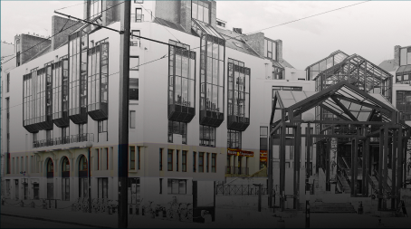

Portfolio créatif · Bordeaux, France
Jade
Barthes.
Graphisme, photographie
& images qui racontent.
01 / Sélection
Projets
choisis.
Neuf projets entre graphisme, photographie et création visuelle.
 01
PHOTO / ÉDITIONSkin Stories
01
PHOTO / ÉDITIONSkin Stories
Une exploration de l'identité à travers le tatouage, entre iconographie du Japon traditionnel et imaginaires contemporains du manga et du cyberpunk. Photographies et compositions éditoriales racontent l'histoire derrière chaque motif.
Voir le projet

02
DESIGN / PRÉVENTIONDiabète : reconnaître & agir
Trois affiches pédagogiques transforment des informations médicales en repères accessibles : reconnaître hypo- et hyperglycémie, comprendre le matériel de contrôle et utiliser un spray d'urgence. Une hiérarchie claire et des codes couleur facilitent la lecture rapide.
Voir le projet

03
MOTION DESIGNInternet Super Média
Vulgarisation animée du modèle interactionniste d'Arnold H. Buss : comment personnalité et situation influencent nos comportements sur les réseaux sociaux. Le projet mêle recherche, storyboard et data visualisation en mouvement.
Voir le projet
 04
PHOTOGRAPHIETerroirs vivants
04
PHOTOGRAPHIETerroirs vivants
Au Parc des Expositions de Bordeaux, un reportage sur les personnes, les gestes et les échanges du salon. Une approche sur le vif, portée par la lumière naturelle et les détails qui racontent le travail de la vigne.
Voir le projet

05
IDENTITÉ VISUELLEMagescq'tique
Création d'une identité de marque conçue pour rester reconnaissable sur différents supports. Le projet rassemble logo, règles typographiques, palette chromatique et déclinaisons de communication.
Voir le projet

06
REPORTAGE / GRAPHISMEEspingo
Un carnet de voyage pluridisciplinaire autour du dialogue entre l'humain et le paysage pyrénéen : reportage vidéo, photographie, recherches d'identité et dépliant pédagogique. Le logo finaliste traduit la rencontre entre géométrie et matière minérale.
Voir le projet

07
ILLUSTRATION / AFFICHESouvenirs de villes
Une collection d'affiches inspirées des carnets de voyage. Les monuments sont réduits à leurs silhouettes essentielles, dans des palettes de couleurs liées à la lumière et à l'atmosphère de chaque ville.
Voir le projet

08
NARRATION / ILLUSTRATIONThe Echo of Heart
Un comic complet autour de Sora, de la mémoire et de l'amitié. L'histoire mêle dessin traditionnel et éléments numériques dans un univers inspiré de Kingdom Hearts, avec un récit pensé en séquences et en cases.
Voir le projet

09
WEB DESIGNMusée de l'Imprimerie
Une proposition de refonte web pour valoriser les collections historiques du musée de Nantes. Le travail cherche l'équilibre entre clarté de navigation, accès aux informations pratiques et richesse du patrimoine typographique.
Voir le projetÀ propos
L'image raconte
quelque chose.
Passionnée par la capture de l'instant et la structure du pixel, j'explore le graphisme et la photographie pour donner vie à des univers singuliers.
Du Bac Pro Communication Visuelle au BUT MMI, mon parcours m'a appris qu'une image ne vaut rien sans intention.
Actuellement
Études en BUT MMI · Bordeaux
Contact
On imagine
la suite ?
Une idée, un projet ou simplement envie de discuter ? Ma boîte mail est ouverte.
jadebarthesperso@gmail.com